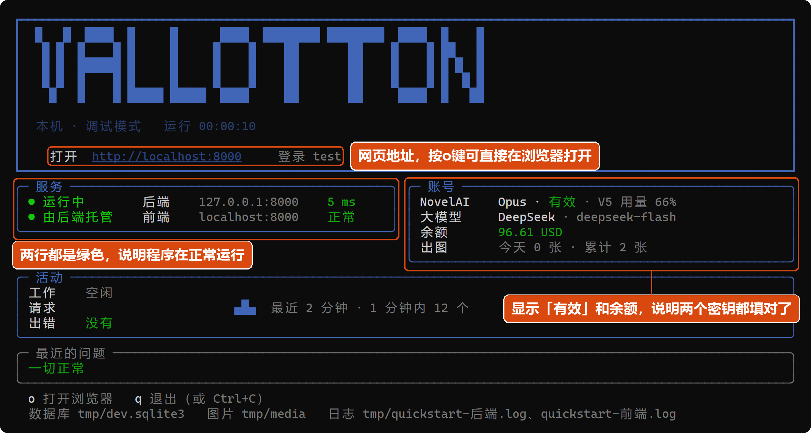
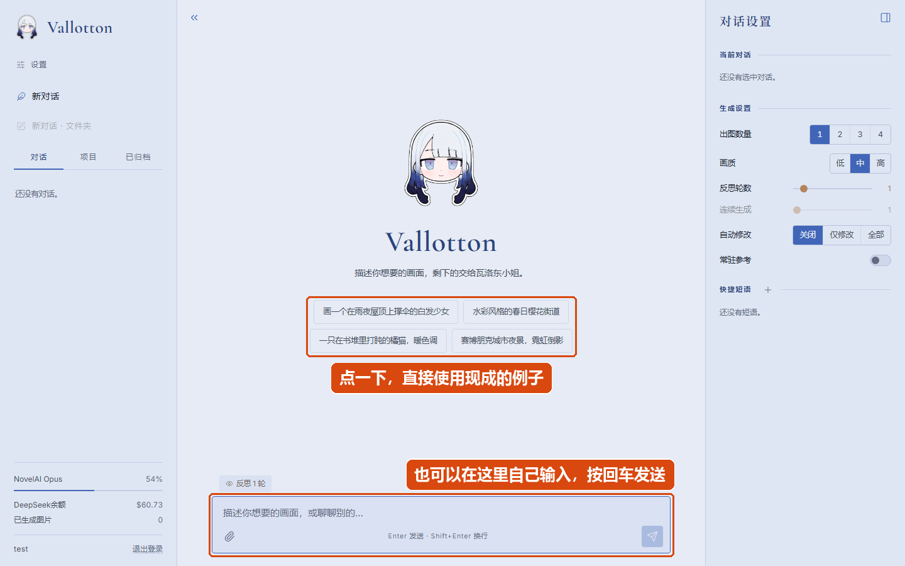
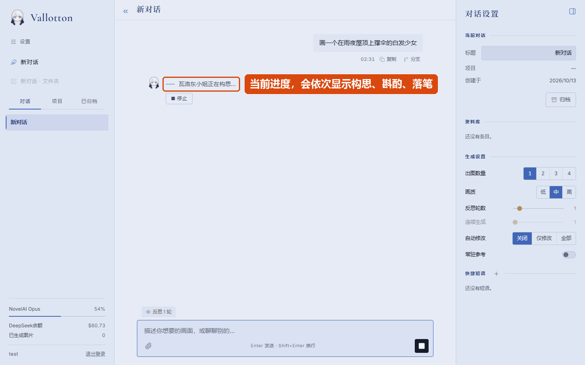
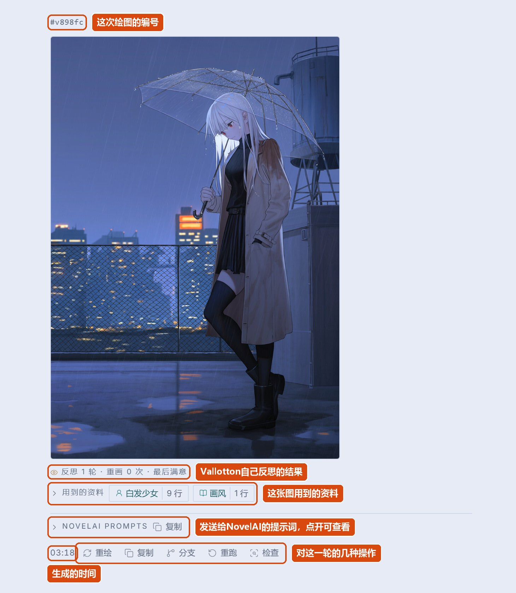

快速上手
这一章是一个手把手教程，目标是让第一次使用的用户在自己的电脑上把Vallotton快速跑起来，并且画出第一幅画。这个过程会使用我们提供的一个便携式启动脚本，你基本上不需要额外配置任何环境。
你需要准备的东西
准备两个账号
正如前言中反复提到的，Vallotton本质上是一个把deepseek（或者其他LLM服务） 和NovelAI V5接起来的工作流。这两家都是收费的在线服务，你需要各有一个账号，并且从账号里拿到对应的密钥交给Vallotton。
| 平台 | 用来做什么 | 怎么拿到密钥 |
|---|---|---|
| NovelAI | 画图。需要订阅，按月付费。 | 登录novelai.net，打开账号设置（User Settings），进入「Account」一栏，找到「Get Persistent API Token」按钮。点击它会显示一串以pst-开头的字符串，这就是NovelAI的密钥。这个弹窗关掉以后就再也看不到这串字符了，请先把它复制到一个安全的地方存好。 |
| DeepSeek | 理解你的话，规划画什么、怎么改。 | 打开platform.deepseek.com注册账号，先在「充值」里充一点钱（几块钱就能用很久），然后在「API keys」页面新建一个key，会得到一串以sk-开头的字符串。它同样只显示一次，请先复制存好。 |
大致成本：NovelAI是固定的月费，订阅期间用默认画质画图不另外收费。DeepSeek按用量计费，每画一张图大约几分钱。之后在Vallotton的设置页里可以看到两边还剩多少额度。
要不要装软件？
Vallotton的后端是用Python写的，这个快速启动脚本中会自动下载并准备好需要的Python环境。但如果脚本的自动安装失败，可能需要你手动安装Python。
（如果你的电脑上已经有Python，也不用担心这些脚本会污染环境。Vallotton自动装的Python只会在本项目中使用，不进入系统环境。）
下载并启动
先从GitHub下载代码。然后，
- Windows：打开Vallotton文件夹，双击或在命令行中运行
start.bat。 - macOS / Linux：打开终端，进入Vallotton文件夹，运行
./start.sh（第一次如果提示没有权限，先执行chmod +x start.sh）。
启动脚本会按顺序做下面几件事：
- 第一次运行时会自动准备Python：如果电脑上已经有Python（3.12以上），那么就直接用它；没有的话会自动下载一份。两种情况都只放在Vallotton文件夹下的
.runtime目录里。一般不到一分钟。 - 检查需要的组件是否完整。
- 如果环境变量还未创建，则会交互式创建环境变量。
- 准备环境变量，启动程序，然后自动打开浏览器。
准备环境变量
第一次运行时，脚本需要创建环境变量。具体来说，需要你回答以下四个问题：
| 问题 | 填什么 |
|---|---|
| DeepSeek API key | 上面从DeepSeek拿到的、以sk-开头的那串字符。 |
| NovelAI persistent token | 上面从NovelAI拿到的、以pst-开头的那串字符。 |
| 网页登录用户名 | 以后登录Vallotton网页用的名字。直接按回车就用默认的「user」。 |
| 网页登录密码 | 以后登录网页用的密码，自己定一个，输完按回车即可。 |
回答完以后，脚本把这些内容保存到Vallotton文件夹的.env文件里，以后就不再问了。将来如果换了密钥或者想改密码，用记事本打开这个文件改掉对应的那一行，再重新启动就行。
后台面板
一切顺利的话，浏览器会自动打开一个登录页面（如果没有自动打开，你可以手动打开http://localhost:8000），同时命令行窗口会变成一块显示运行状态的后台面板，大致像这样：

如何看懂这个面板：
- 「服务」下面两行都是绿色的，则说明程序正常跑着。
- 「账号」下面，NovelAI那行写着「有效」、余额那行能显示出数字，说明两个密钥都填对了。如果哪一行是红色的，就是那个密钥有问题，见出了问题怎么办。
- 「打开」后面的网址就是Vallotton的网页地址。如果浏览器没有自动打开，可以把它复制到浏览器地址栏里打开。在面板里按o键也可以自动打开。
这个命令行窗口在Vallotton运行期间要一直开着。
登录
在浏览器打开的页面里，输入你设置的用户名和密码，点登录即可进入。目前，Vallotton是单用户的，只接受环境变量中创建的那个账号，因此你无需（也无法）与其他人共享一个服务。
画第一幅画

登录后看到的是一个空白的欢迎页，上面写着「新的开始。想画点什么？」，下面有几句现成的例子。你可以点其中一句，也可以在页面底部的输入框里自己写一句，比如：
画一个在雨夜屋顶上撑伞的白发少女按回车键即可发送。
接下来需要等一段时间。页面上会显示Vallotton实际上在做什么。「正在构思」是大语言模型在规划画面，「在斟酌」是在把画面翻译成NovelAI能理解的提示词，「正在落笔」是NovelAI在出图。第一张图通常要一到三分钟，大部分时间花在模型思考上。（喜欢我蓝色大肥鱼的雷霆大思考吗）

画好以后，生成的图会出现在回复里。有几个地方值得注意：
- 图的上面有一行小字，以#开头，是这次绘图的编号。你可以用这个编号来引用这张图，例如「改一下#114514这幅画的画风」。
- 图下面的「用到的资料」列出这张图用到了资料库里的哪些内容。「资料库」会在后面介绍。
- 图片下面有几个按钮。点击「重绘」可以使用相同的NovelAI提示词重新画一幅图；「重跑」则重跑整个过程；「分支」可以从当前消息开始创建一条新的对话；「检查」可以查看这一轮的全部细节。

改一改
画完第一张之后，可以直接在输入框中继续输入消息。你的消息可以是画一张新的图，也可以是修改现有图。例如：
把伞换成红色的，人再靠近镜头一点Vallotton会在上一张的基础上改，并且尽可能只改你说到的部分。

Vallotton会记住设定
画里出现一个人物时，Vallotton会主动把这个人物记进本次对话的资料库：长相是什么样、头发什么颜色、穿的每一件衣服，都分别记成一行。之后在这次对话里再画这个人物，就都会按记下来的内容画。这样做是为了尽可能保证同一个对话中人物的一致性。
除了人物以外，这次对话用的画风、反复出现的场景、其他一直成立的设定（比如「一直在下雨」），Vallotton也会自动写进资料库，所以一组图的画风不会一张一个样。
记下来的人物会以标签的形式显示在输入框的上方。鼠标放上去（手机上是点一下）就能看到记了什么。

如果一个对话中创建了一个资料库条目（例如，一个人物），而你想在别的对话里也用这个人物，需要在右边栏中把对应的条目「存到项目」里。这部分在进阶指南的资料库一节里有详细说明。在这个快速上手教学中我们先不管这个。
重新启动服务
总有一天，你不想再继续画图了。你可以关掉本机的Vallotton服务。所有的环境变量和数据都会被保留，下次重新启动服务即可继续使用。- 停止服务：回到那个命令行的后台窗口，按q键（或者Ctrl+C也可）即可停止进程。
- 重新启动服务：和第一次使用一样，只需要运行
start.bat（macOS / Linux则是./start.sh）。只要.env文件还在，就不需要重新配置环境变量。之前的对话、图片、记下来的资料也都会保存。 - 存储位置：在快速启动脚本中，所有数据都存在Vallotton文件夹里。对话在
tmp/dev.sqlite3这个文件里，图片在tmp/media文件夹里，密钥和密码在.env文件里。 - 关掉浏览器或者标签页不会停止服务，也不会打断正在画的图，关掉后台窗口才会停止。
出了问题怎么办
以下是一个简易的问题自查表。
| 看到的现象 | 原因和处理办法 |
|---|---|
| 第一次运行时卡在下载，或者提示「Could not download Python」 | 电脑上没有Python 3.12以上的版本时，第一次运行需要联网下载大约40 MB。如果网络不通或者需要代理，那么先连好网络或者设好代理再运行。如果下载到一半中断了，那么删掉Vallotton文件夹下的.runtime目录重新运行。 |
| 提示「端口8000被占用」 | 快速启动脚本的后端默认运行在8000端口上。遇到这个提示说明电脑上有别的程序正在用8000端口。你可以在命令行里带参数启动换一个端口：（以换成8020为例）Windows是start.bat --api-port 8020，macOS / Linux是./start.sh --api-port 8020，然后网页地址会变成http://localhost:8020。 |
| 面板里NovelAI那一行是红色的 | NovelAI的密钥填错了，或者订阅已经过期。用记事本打开Vallotton文件夹里的.env文件，把NOVELAI_API_KEY=后面的内容换成正确的密钥，保存，然后重新启动。 |
| 面板里大模型的余额显示「查不到」，或者发消息后一直停在「正在构思」 | DeepSeek的密钥不对、账户里没有余额，或者电脑连不上DeepSeek的服务器。先到platform.deepseek.com确认密钥和余额；密钥不对就改.env里DEEPSEEK_API_KEY=那一行。 |
| 画图失败，错误里有「402」 | NovelAI账号里的点数（Anlas）用完了。这通常是因为用了「高」画质。在网页右侧的「生成设置」里把画质改回「中」。 |
| 网页右下角显示NovelAI「状态未知」 | 查询NovelAI账号状态的接口偶尔连不上，不影响画图。几分钟后会自己恢复。 |
| 想看更详细的运行记录 | Vallotton文件夹下的tmp/quickstart-后端.log和tmp/quickstart-前端.log两个文件里有完整记录。 |